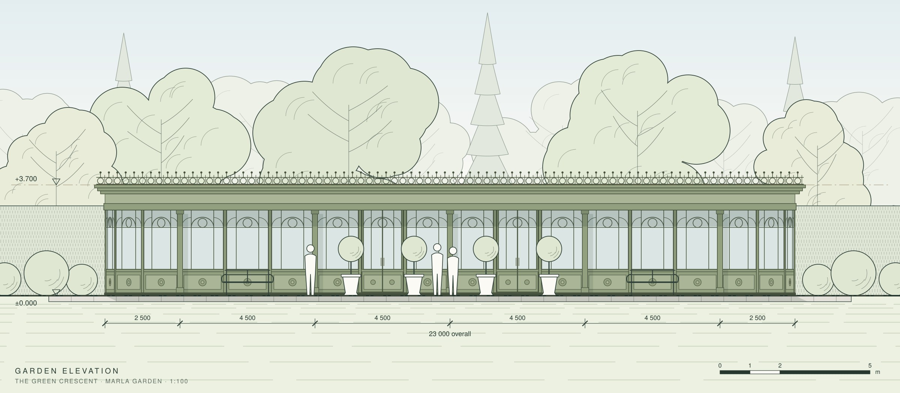
Marla Garden · Design Studio
Conservatory and garden room design
The Green Crescent · Garden elevation
From drawing to built
The same building, completed
A garden room begins with how you want to use it. Drawings and renders make the layout, roof and glazing easier to review before we agree what will be made. The Green Crescent was set out in the elevation above before a single frame was cut; this is the finished conservatory.

Start with the garden and the way in
A first plan looks at where people arrive, how they move through the room and what they see from it. The Green Crescent shows how a long glazed elevation can relate to a garden route. For a room adjoining a house, the position of the doors and the route across the threshold become just as important.
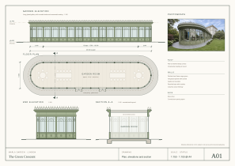
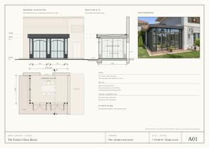
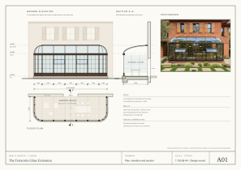
Read the façade before choosing the details
An elevation shows how door height, frame spacing and arched glazing work together across the façade. The Gothic Arch, Glass Salon and Classical Salon explore different balances between the entrance, the surrounding glazed bays and the ornamental metalwork.
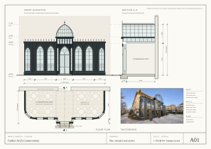
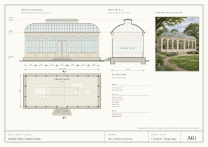
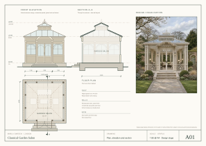
Use sections and renders to understand height and light
A section shows what happens above eye level: the height at the edge of the room, the rise of a dome and the space beneath a roof lantern. A render puts those choices back into a view you can picture from the garden. On the Black Lantern Room, the section explains the raised roof and the render shows how it reads above the dark frame.
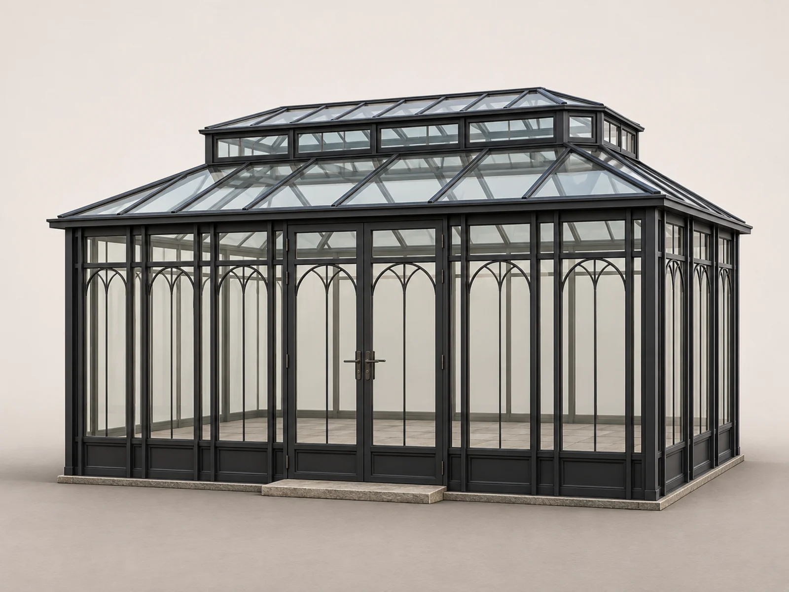
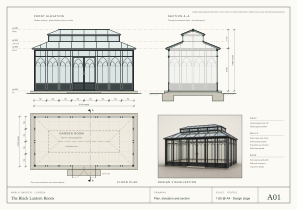
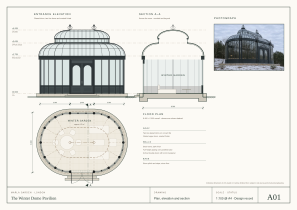
Decide how open the structure should feel
The same garden can suit an enclosed glass pavilion, an open lattice gazebo or a roofed shelter with curtains. Plans show the usable footprint. Elevations and sections show how the roof and sides affect shelter, views and the relationship to the planting.
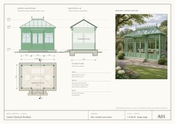
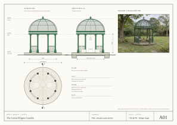
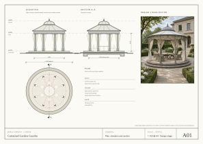
From design to an agreed project
Drawings and renders are part of the agreed scope for a Marla Garden structure. These examples illustrate design intent. Project dimensions and specifications depend on the site and the checks required for the work.
See our design, fabrication and installation process or browse the conservatory, pavilion and gazebo designs.
Your next space
LET’S BEGIN
WITH YOUR IDEAS.
Share the setting, the way you want to use the space and the designs you are drawn to.
Plan your project